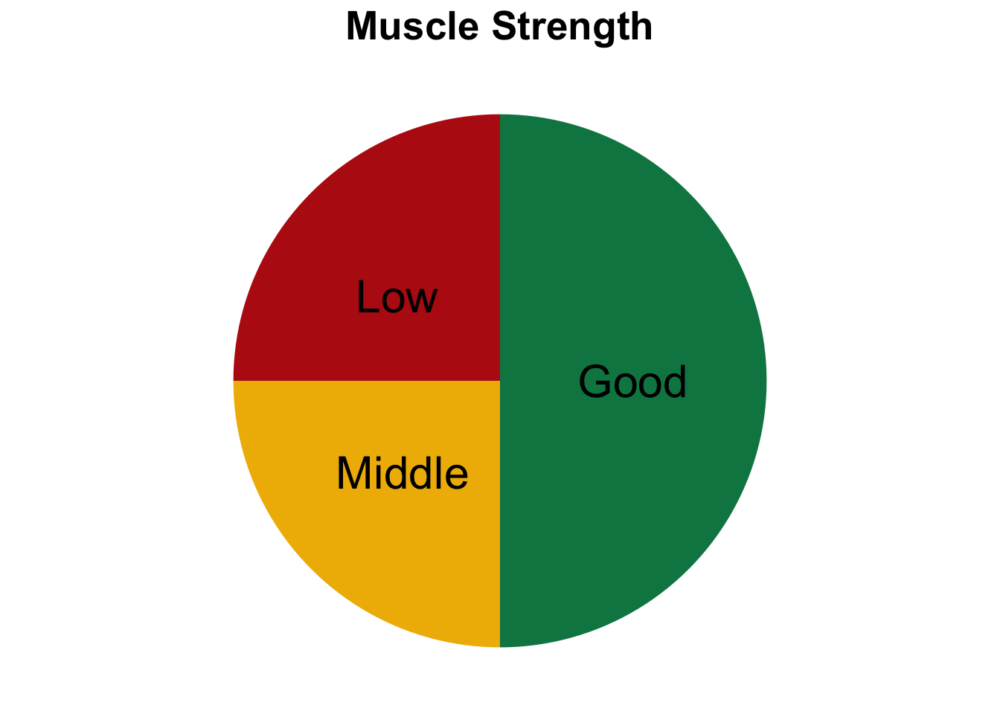
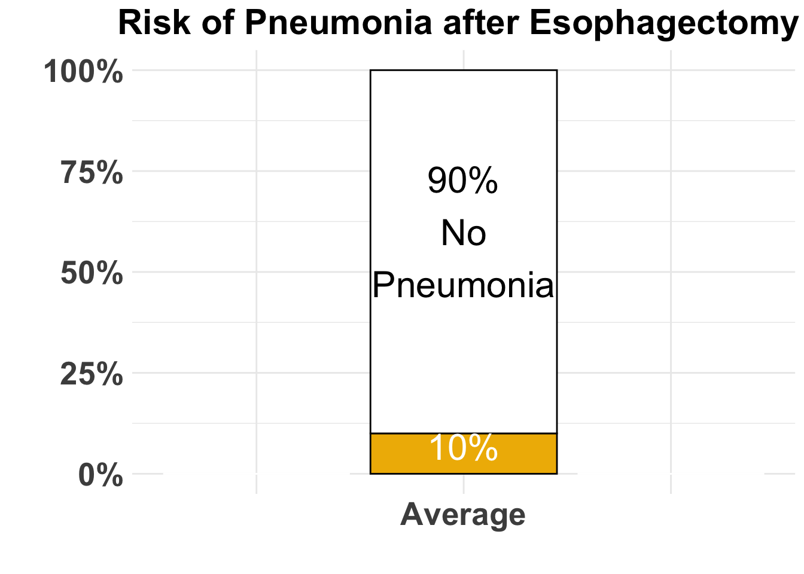
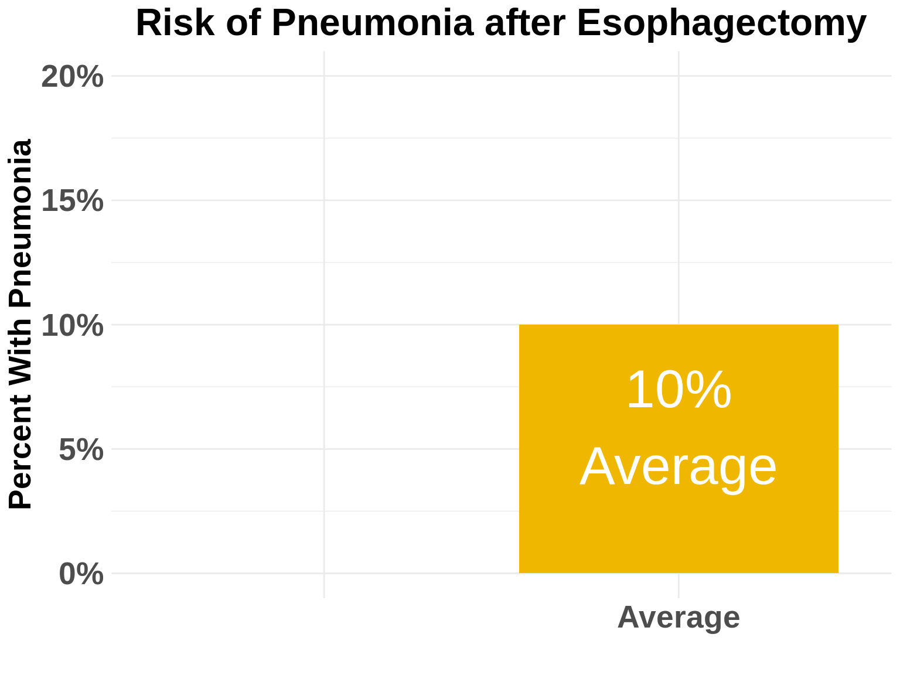
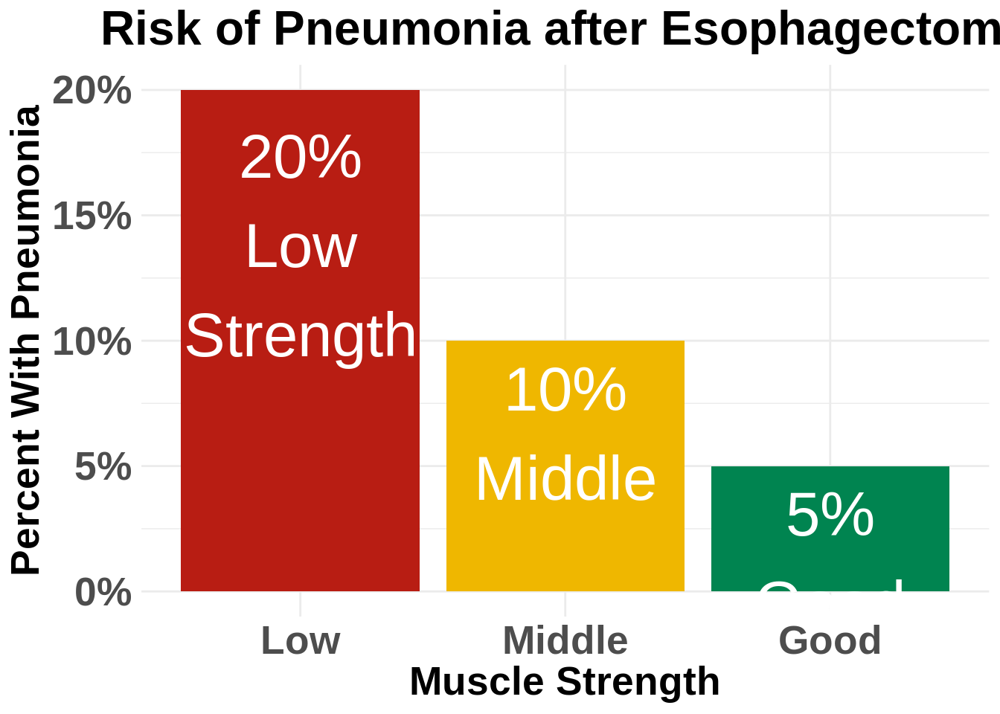

Esophagectomy
Introduction
I’m Dr Jonathan Salo, a GI Cancer Surgeon in Charlotte, North Carolina.
In this video, you will learn about
- Different kinds of surgery for esophageal cancer
- Risks of surgery
- How you can reduce the risk of surgery
In another video, we’ll talk about how to choose a hospital and surgeon for your esophagectomy.
Surgery for esophageal cancer is generally performed for three different situations:
- Superficial Tumors (T1) that can’t be completely removed by endoscopy
- Localized Tumors (T2N0)
- Locally Advanced Tumors (T3 or N+) after the completion of preoperative therapy. Preoperative therapy is generally some combination of chemotherapy and radiation.
If you haven’t seen it already, this may be a good time to view the Esophageal Cancer Treatment Options video. There’s a link above and a link in the description below.
Esophageal Cancer Treatment Options
Goals of Esophagectomy
- Remove tumor from esophagus
- Remove surrounding lymph nodes
- Create a new esophagus

Resection
The Ivor Lewis esophagectomy, shown here, removes the lower 2/3 of the esophagus, the tumor, and the surrounding lymph nodes.

Reconstruction
A new esophagus is created from the stomach in the abdomen by fashioning it into a tube.

Ivor Lewis esophagectomy
The new esophagus is now brought up into the chest. A new connection is made between the esophagus and the stomach, called an anastomosis.

Open Esophagectomy
Open esophagectomy uses conventional incisions in the abdomen and the right chest. An incision is made between the ribs on the right side, and an abdominal incision made from the breast bone to below the belly button. This is a well-established surgical approach which has been used for the past 75 years.

Minimally-invasive Ivor Lewis
Mininally-invasive esophagectomy uses small incisions in the abdomen and chest. A surgical telescope and special instruments are used to perform the operations. This operation is a more recent innovation and can be used in many cases instead of an open approach.
The smaller incisions mean faster recovery and less discomfort

Minimally-invasive Ivor Lewis
We have found this is the best option for most of our patients. In some cases, an open approach is still necessary.
Total Esophagectomy
For patients with tumors in the upper esophagus, we need to remove more of the esophagus

Total Esophagectomy
For those patients, we need to remove the whole esophagus

Minimally-invasive McKeown Esophagectomy
In this case, a connection between the esophagus and the stomach is made in the neck.

Transhiatal Esophagectomy
Another option is a transhiatal esohagectomy, which avoids the need to make incisions in the right chest. The operation is performed from the abdomen and the right neck.

When you meet with your surgeon, you will have an opportunity to discuss your particular situation and their recommendation for surgery. Your surgeon will recommend a surgical approach based upon you and your tumor and their personal experience.
Risks of Surgery
An esophagectomy is a substantial operation, and in some cases there can be postoperative complications. We’re going to talk about two of these complications and what you can do to reduce your risk of complications:
- Anastomotic leak
- Pneumonia
Anastomotic Leak
The anastomosis is surigcal connection between the esophagus and the stomach.

Anastomotic Leak
If anastomosis does not heal properly, this can cause a leakage of fluid from the esophagus, called an anastomotic leak. If this happens, an infection can occur in the mediastinum, which is the space near the heart between the lungs.

Anastomotic Leak
In some cases, the leak will heal on its own, but other cases may require additional procedures or even surgery. The risk of leak depends upon the operation performed but also depends upon the experience of the surgeon. At the end of this video we have a link to a video about how to choose a hospital and a surgeon, which talks further about the risks of a leak.
Pneumonia
Pneumonia is another complication which can occurs in about 10-15% of patients after esophagectomy. Pneumonia requires treatment with antibiotics and frequently requires a longer hospitalization.

Preventing Pneumonia
In normal circumstances, secretions from the mouth and throat aren’t able to enter the lungs because we clear our throat and if secretions do get into our airway, we tend to cough and keep those secretions out of our lungs. This happens constantly without our thinking about it.
After esophagectomy, however, there is a tendency for secretions to enter the airway, and if you can’t clear them, there is a risk that pneumonia will set in.
There are two important ways that pneumonia can be prevented:
- Deep breathing
- Walking
Deep breathing and coughing
After surgery, it’s important to breathe deeply to help your lungs recover after surgery. Deep breathing make the cough more effective and helps clear secretions. After surgery, deep breathing and coughing can be uncomfortable, so controlling your discomfort will be an important part of your recovery.
Walking
Walking after surgery is also an important way to help your lungs recover as well. When we walk, it’s easier for our lungs to function, and again, it makes the cough more frequently.
Preventing Pneumonia
How can we prevent pneumonia? Believe it or not, I can tell who is more likely to develop pneumonia after surgery when I first meet them and shake their hand. Someone with a firm handshake has a lower risk of pneumonia. We think this is because someone with a firm handshake has good muscle tone, and someone with good muscle tone probably has good function of the muscles between the ribs so that they have a nice strong cough and can prevent pneumonia.
Strength
In our clinic, we actually measure out patient’s strength with a hand-held strength gauge called a dynamometer. Based upon these measurements, we can identify patients who may be at risk of pneumonia.
Patient Strength and Esophagectomy Outcomes
About half of our patients have good strength, shown in green. A quarter are have low strength, shown in red Another quarter are in the middle, shown in yellow
Pneumonia
Overall, the risk of pneumonia is about 10% in our patients who undergo esophagectomy. 90% of patients never experience pneumonia, but 10% will have pneumonia after surgery.


However the risk of pneumonia is not the same for everyone. Even though the average risk is 10%, the risk is much higher for our patients with low muscle strength and much lower for patients with good muscle strength.
For the half of our patients with good muscle strength, the risk of pneumonia is about 5%. On the other hand, the risk of pneumonia is 20% in the quarter of our patients who have low muscle strength.

Muscle Strength and Risk after Esophagectomy
The results of our research suggest a simple answer: The risk of pneumonia is related to a patient’s muscle strength.]

Now this doesn’t mean that you need to look like this to prevent pneumonia after your esophagectomy]

The good news is that you can increase your muscle strength before surgery in two very simple ways:
Good nutrition with adequate intake of protein
Exercise
Good News
with proper nutrition and exercise, you can increase your muscle strength, and we have good reason to believe this will reduce your risk of complications after esophagectomy.
When you meet with your surgery team, be sure to ask them about pain control after surgery and how you can increase your muscle strength.
In the next video in our series, you will learn about how to choose a hospital and a surgeon for esophageal surgery:
Choosing a Hospital and Surgeon for Esophagectomy
We hope you have found this video helpful. This videos and others like it are designed to
educate patients and families about esophageal cancer
and equip them for their discussions with their esophageal cancer care team.
As always, these videos are no substitute for expert medical advice.
Feel free to leave a comment or a question, or if you have suggestions for future videos.